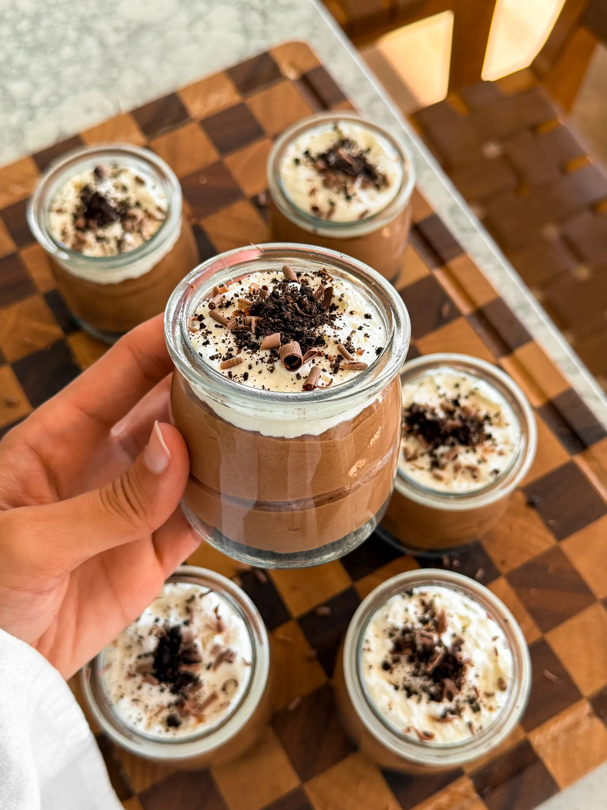

Dessert

Chocolate Mousse Cups
For all my chocolate lovers, these mousse cups are the ultimate silky,
rich, spoon-worthy treat. They look fancy but come together with just a
few simple steps and a quick chill. Every bite is light, creamy, and so
chocolatey and I have a feeling you're going to be obsessed.
Ingredients
Crust
- 20 Oreos
- 4 tablespoons unsalted butter, melted
CHOCOLATE MOUSSE
- 1 cup heavy cream
- 2 tablespoons unsalted butter
- 3 to 4 tablespoons granulated sugar
- 6 ounces semi-sweet chocolate, chopped
- 1/2 teaspoon espresso powder
- 1/2 tablespoon vanilla extract
- pinch of salt
- 3 large egg yolks
- 1/2 cup heavy cream
CHANTILLY CREAM
- 3/4 cup heavy cream
- 3 tablespoons powdered sugar
- 1/2 teaspoon vanilla extract
Instructions
Crust
- Add the Oreos to a food processor and pulse until very fine
crumbs form.
- Transfer the crumbs to a mixing bowl. Pour in the melted butter
and mix until the texture feels like wet sand.
- Cover the bowl and set aside.
CHOCOLATE MOUSSE
- Place the chopped chocolate in a medium heat-safe bowl.
- In a small saucepan over medium-low heat, add the heavy cream,
butter, and sugar. Whisk until the mixture is hot and the sugar
is dissolved, but do not let it boil.
- Pour the hot cream mixture over the chocolate, cover the bowl,
and let it sit undisturbed for 10 minutes.
- Uncover and whisk from the center outward until completely
smooth and glossy. Let it cool slightly so it's warm but not
hot.
- Whisk in the egg yolks until fully combined.
- Add the espresso powder, vanilla extract, and a tiny pinch of
salt, then whisk again until smooth.
- In a separate bowl, whip the chilled heavy cream with a hand
mixer or whisk until soft peaks form.
- Add the whipped cream to the chocolate mixture in batches,
gently folding after each addition until the mousse is light
and airy.
- Cover the mousse, trasnfer to the fridge, and set aside.
CHANTILLY CREAM
- In a clean bowl, add the heavy cream, powdered sugar, and vanilla
extract.
- Whip with a hand mixer or whisk until soft peaks form.
Assemble
- Add a few spoonfuls of the crust mixture to the bottom of each cup
and press down lightly to form an even layer.
- Spoon or pipe the chocolate mousse on top so each cup fills about
two-thirds to three-quarters of the way up.
- Finish the remaining space with Chantilly or whipped cream.
- Enjoy right away, or cover each jar and refrigerate for up to 3
days.